ФОТОГРАФИИ ХАТУНИ И ОКРЕСТНОСТЕЙ
Фото Дарьи Романовой
Панорама: вид с колокольни
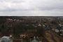
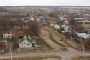
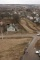
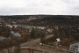
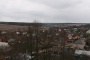
 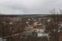
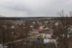
Окрестности Хатуни
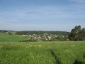
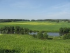
Церковь Рождества Богородицы
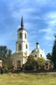
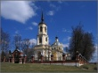
Отец Валерий Приходченко
Фото Марины Рожковой
Деревня Прудно
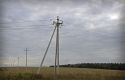
Вид с Воскресенской горы на противоположную сторону Лопасни
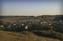
Колокольня Храма Рождества Пресвятой Богородицы
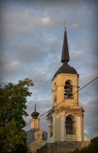
Вид на Хатунь и храм с поля на противоположной стороне Лопасни
(с проселочной дороги, как идти в сторону плотины)
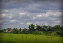
Мост из Хатуни в Прудно,
это место называют Лавы
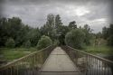
Вид на Хатунский большой мост
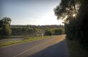
Вид на Лопасню с большого моста
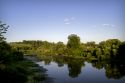
Вид на плотину
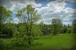
Вид с плотины
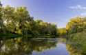
Фото вдоль берега с разных точек
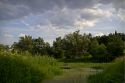
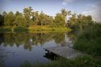
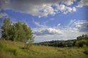
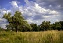
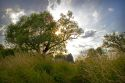
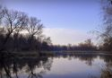
Лес кладбищенский, гора Воскресенская
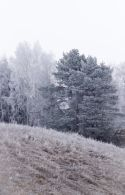
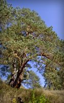
Рядом с лагерем "Русская сказка"
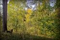
Лес дальше кладбища, в сторону полей
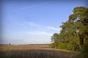
Починки
Храм архангела Михаила и пейзаж при въезде в село
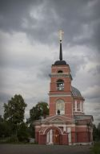
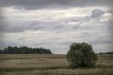
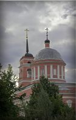
Не доезжая до Хатуни из Москвы
между деревнями Торбеево и Заварыкино.
Поле с мышиным горошком в июне и иней в начале ноября
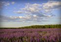

Главная страница сайта
Последнее изменение страницы 24 Oct 2018
ПОДЕЛИТЬСЯ: